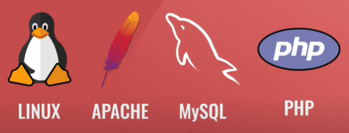
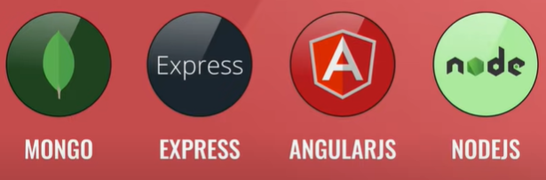

Arquitectura cliente-servidor
¿Que es la arquitectura cliente-servidor?

El cliente-servidor es un modelo de diseño de software en el que las tareas se reparten entre los proveedores de recursos o servicios, llamados servidores, y los demandantes, llamados clientes. El cliente y el servidor son dos computadoras. El cliente es quien pide información y el servidor es quien entrega la información, siempre y cuando el cliente tenga los permisos.
Front-end
Es la parte del sitio web a la que el usuario pueda llegar a acceder directamente. Son todas las tecnologías de diseño y desarrollo web que corren en el navegador y que se encargan de la interactividad.
¿Cuales son los roles y las funciones de ellos dentro del Front-End?
- UI (User Interface):
- Maquetador:
- Programador Front-end:
Es la persona encargada de realizar diseños en la pagina web, esta está encargada de la interacción de usuario, de todas las etapas que se va a realizar para alguna tarea, esta persona se enfoca en el usuario asegurandose que el sitio web llegue a ser atractivo a la vista y que se pueda interactuar con el.
Es la persona que se encarga de recoger las maquetas que ha diseñado el UI y así llevarlo a codigo en HTML, CSS y JavaScript. En este rol se verifica que el código funcione correctamente en varios navegadores, que sea responsive design y todo lo que tenga que ver con la parte visial de una web.
Es la persona que programa lo lógico del lado del cliente, haciendo uso de alguna libreria o framework, consume una API que bien podría venir del back-end y este no se encarga del diseño.
¿Cuales son los principales lenguajes y frameworks usados en el Front- End?
Lenguajes de Front-end:
- HTML.
- CSS
- JavaScript
Frameworks
- Vue.js
- React.js
Back-end
¿Que es el backEnd?
Se refiere a la parte lógica de una pagina web o sea la arquitectura interna del sitio que asegura que todos los elementos desarrollen una función de manera correcta. Se basa en el código interno de la pagina y se encarga de la funcionalidad del sitio, la seguridad y la optimizacion de los recursos.
¿Cuales son y que funcion tienen los roles del BackEnd?
- Backend developer:
- Database Administrator (DBA):
- Administrador de sistemas:
Se encarga de la lógica del negocio (el código del lado izquierdo del servidor) y crea las APIs para que el Frontend pueda consumirlas.
Diseña, implementa, mejora y mantiene el sistema de las bases de datos.
Se encarga de administrar los sistemas, gestiona la instalacion, soporte y mantiene el servidor en donde se aloja la web o app.
¿Cuales son los principales lenguajes de programación y frameworks del backend?
- PHP
- Java
- Ruby
- Phyton
- Larevel.
- Symfony.
- Django.
Lenguajes de programación:
Frameworks:
¿Que es un Stack?
Es una pila de tecnologias que se utilizan para desarrollar un software, se suele llamar programador full stack al programador que hace el back-end y front-end.
Ejemplos de Stack:
El stack mas usado fue LAMP:
- Linux: como sistema operativo.
- Apache: como servidor web.
- MySQL: como base de datos.
- PHP: como lenguaje de programación.
El segundo stack MEAN:
- MONGO: para la base de datos.
- Express: como framewors de Nodejs
- Angularjs : para la parte del front-end
- Nodejs: para la parte del back-end.
Video del desarrollo de la practica.